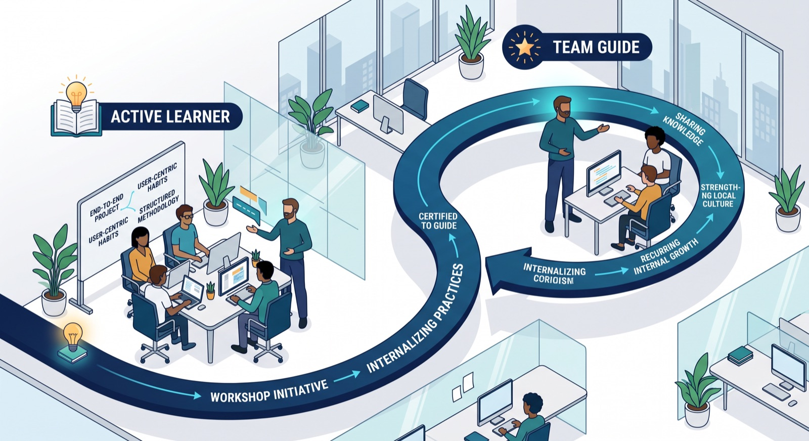

What the True North Guide Program Actually Is, and What It Can Do for a Company
Inside the True North guide-led training model: what it teaches, how the team guide role works, and the real business case for companies.
A lot of professional development programs promise to change how you work and then hand you a certificate that changes nothing. True North is one of the few I've been through where the effect was visible almost immediately — not because of the certificate, but because of the format: you're trained by someone doing the job in front of you, and later you do the same for someone else. I went through the program as a participant in Athens, and some time later held a workshop in Zagreb together with Jeremiah, where I was in the role of team guide. That second experience is where I actually understood what the program is built to do.

What True North actually is
True North is a structured software development methodology, delivered through short, intensive, project-based workshops rather than lectures. Instead of a fixed roster of professional trainers, sessions are run by people who recently went through the program themselves as participants and were then certified to guide a team through it — the "Guide" role. Participants work in small groups on something close to a real end-to-end problem instead of isolated exercises, with a guide steering the team through the process hands-on rather than explaining it from the front of a room.
The part that matters most for a company evaluating this isn't a specific tool or curriculum — it's that structure. A team guide isn't a professional instructor parachuted in for the week; they're someone who was recently a participant themselves and still remembers exactly where the confusing parts are.
The Guide model, from the inside
Becoming a team guide isn't a one-time credential you collect and move on from. You go through the program first as a participant, and only later — once you've internalized how it runs — are you asked to guide a team through it yourself, often somewhere else, for a different group of people. I trained in Athens; later, I held a workshop in Zagreb together with Jeremiah, where my role was team guide. That gap between attending and leading is intentional, and it's the mechanism that makes the whole thing self-sustaining: it doesn't depend on external trainers, it depends on people who were recently in the room as learners.
Being on the other side of it changes what you pay attention to. As a participant, I came away with a habit that shaped how I do QA work afterward: keep the actual person who'll use whatever you're building in view, at every stage, not just at the end when there's a UI to click through. As a team guide in Zagreb, my job — alongside Jeremiah — was to get a room of people who'd never met each other to internalize that same habit in a few days, through problems they had to work through themselves rather than a slide explaining the concept. You learn quickly which explanations actually land and which ones just sound good in the moment — a different kind of skill from doing the work yourself, and one that made me better at explaining testing decisions to developers back on my own team.
What this is actually worth to a company
The direct, easiest-to-see benefit is the training itself: people come back with concrete habits — clearer requirements discipline, a sharper sense of who the end user actually is, structured testing habits — that they apply on real project work immediately afterward. That part is true of most decent training programs, though, and isn't specific to this model.
The part that's harder to replicate any other way is what the team guide structure does to retention and internal culture. Sending someone through a program once is a line item. Building a pipeline where your best people go through it, then come back qualified to guide the next round, turns training into a recurring source of internal growth rather than a one-off expense — people get a visible next step (participant to team guide) that doesn't require a title change or a different job. It also quietly standardizes how people on a team explain their own work, because leading a session forces you to articulate practices you'd otherwise just apply on autopilot. A QA engineer who has had to explain "why we test this way" to a room of strangers explains it more clearly to a developer on their own team afterward too.
There's a network effect as well, though it's less tangible: people who've guided a workshop, whatever company or city they come from, end up having gone through the same core experience, which makes cross-company conversations about process — testing standards, how a team handles onboarding, what "done" actually means — start from more shared ground than they otherwise would.
Where this doesn't help, and where it's a bad fit
None of this replaces a company's own engineering culture or process discipline. A team can send people through a program like this and see no change at all if nobody applies what they learned once they're back at their desk with the usual deadlines — the habit has to be reinforced locally, not just picked up once in a workshop. It's also a slow return: the guide-to-participant pipeline compounds over several cycles, not the first one, so a company evaluating it purely on a single cohort's output will likely be underwhelmed. And it works better for teams that already have some appetite for mentorship internally; dropping someone into a team guide role who's never wanted to teach anyone anything is unlikely to go well, credential or not.
What to do next
If you're considering something like this for your team, start small: send one or two people who already informally mentor others, not your most senior engineer by title. Ask what they'd actually change about how your team onboards or tests before and after — that's the real signal, not the certificate. Build in time for them to apply what they learned on a real piece of work within the first few weeks, while it's still fresh. And if the program offers a path to becoming a team guide, treat that as the actual long-term investment, not an optional extra — that's the step that turns a one-time course into something your team keeps getting value from.
Mnogi programi profesionalnog razvoja obećavaju da će promijeniti način na koji radite, a onda vam uruče sertifikat koji ne mijenja ništa. True North je jedan od rijetkih kroz koje sam prošao gdje je efekat bio vidljiv skoro odmah — ne zbog sertifikata, nego zbog formata: obučava vas neko ko taj posao radi pred vama, a kasnije vi isto radite za nekog drugog. Kroz program sam prošao kao učesnik u Atini, a nešto kasnije sam zajedno sa Jeremiahom održao radionicu u Zagrebu, gdje sam bio u ulozi team guide-a. Tek kroz to drugo iskustvo sam zaista shvatio čemu je program namijenjen.
Šta je zapravo True North
True North je strukturisana metodologija razvoja softvera koja se prenosi kroz kratke, intenzivne radionice zasnovane na projektima, a ne kroz predavanja. Umjesto stalnog tima profesionalnih trenera, sesije vode ljudi koji su nedavno i sami prošli program kao učesnici, a zatim dobili sertifikat da kroz njega vode tim — to je uloga „Guide". Učesnici rade u malim grupama na nečemu što je blisko stvarnom problemu od početka do kraja, umjesto na izolovanim vježbama, a guide usmjerava tim kroz proces direktno, u praksi, umjesto da ga objašnjava ispred table.
Za kompaniju koja razmatra ovakav program, najbitniji nije neki konkretan alat ili nastavni plan — nego upravo ta struktura. Team guide nije profesionalni instruktor koga su doveli na nedjelju dana; to je neko ko je nedavno i sam bio učesnik i još se tačno sjeća gdje su dijelovi koji zbunjuju.
Guide model iznutra
Postati team guide nije jednokratno zvanje koje dobijete i idete dalje. Prvo prođete program kao učesnik, a tek kasnije — kada usvojite kako funkcioniše — dobijete poziv da sami vodite tim kroz njega, često na drugom mjestu i sa drugom grupom ljudi. Ja sam obuku prošao u Atini; kasnije sam zajedno sa Jeremiahom održao radionicu u Zagrebu, gdje sam bio team guide. Taj razmak između učestvovanja i vođenja je namjeran i upravo je to mehanizam koji cijelu stvar čini samoodrživom: ne zavisi od spoljnih trenera, nego od ljudi koji su nedavno i sami sjedjeli u sali kao učesnici.
Kada ste s druge strane, mijenja se ono na šta obraćate pažnju. Kao učesnik, ponio sam naviku koja je oblikovala kako sam kasnije radio QA: da stvarnu osobu koja će koristiti ono što pravite držite u vidu u svakoj fazi, a ne samo na kraju kada postoji interfejs po kojem se može klikati. Kao team guide u Zagrebu, moj posao — zajedno sa Jeremiahom — bio je da grupa ljudi koji se nikada ranije nisu sreli usvoji tu istu naviku za nekoliko dana, kroz probleme koje su morali sami da riješe, a ne kroz slajd koji objašnjava koncept. Brzo naučite koja objašnjenja zaista dopiru do ljudi, a koja samo zvuče dobro u tom trenutku — to je drugačija vještina od samog rada, i zahvaljujući njoj danas bolje objašnjavam odluke o testiranju developerima u sopstvenom timu.
Koliko ovo zapravo vrijedi kompaniji
Najdirektnija korist, i ona koju je najlakše uočiti, jeste sama obuka: ljudi se vraćaju sa konkretnim navikama — jasnijom disciplinom oko zahtjeva, boljim osjećajem ko je zapravo krajnji korisnik, strukturisanim navikama testiranja — koje odmah zatim primjenjuju na stvarnim projektima. Ali to važi za većinu pristojnih programa obuke i nije specifično za ovaj model.
Ono što je teže postići na bilo koji drugi način jeste uticaj team guide strukture na zadržavanje ljudi i internu kulturu. Poslati nekoga jednom na program je stavka u budžetu. Izgraditi tok u kojem vaši najbolji ljudi prođu program, a zatim se vrate osposobljeni da vode sljedeću rundu, pretvara obuku u stalni izvor internog rasta umjesto jednokratnog troška — ljudi dobijaju vidljiv sljedeći korak (od učesnika do team guide-a) koji ne zahtijeva novu titulu ili drugi posao. To takođe nenametljivo ujednačava način na koji ljudi u timu objašnjavaju sopstveni rad, jer vas vođenje sesije tjera da jasno izrazite prakse koje biste inače primjenjivali na autopilotu. QA inženjer koji je morao da objasni „zašto testiramo na ovaj način" sali punoj nepoznatih ljudi, kasnije to jasnije objašnjava i developeru iz sopstvenog tima.
Postoji i mrežni efekat, iako je manje opipljiv: ljudi koji su vodili radionicu, iz koje god kompanije ili grada dolazili, prošli su kroz isto osnovno iskustvo, pa razgovori o procesima između kompanija — standardi testiranja, kako tim uvodi nove ljude, šta zapravo znači „gotovo" — kreću sa više zajedničke osnove nego inače.
Gdje ovo ne pomaže i kada nije dobar izbor
Ništa od ovoga ne zamjenjuje sopstvenu inženjersku kulturu kompanije ni disciplinu u procesima. Tim može poslati ljude na ovakav program i ne vidjeti nikakvu promjenu ako niko ne primijeni ono što je naučio kada se vrati za svoj sto i uobičajene rokove — navika mora da se učvršćuje lokalno, a ne samo da se jednom pokupi na radionici. Povrat je i spor: tok od učesnika do guide-a donosi rezultate kroz nekoliko ciklusa, ne kroz prvi, pa će kompanija koja ga procjenjuje isključivo po rezultatima jedne generacije vjerovatno biti razočarana. I bolje funkcioniše u timovima koji već imaju neku sklonost ka internom mentorstvu; postaviti u ulogu team guide-a nekoga ko nikada nije želio ništa nikoga da uči vjerovatno se neće dobro završiti, sa sertifikatom ili bez njega.
Šta dalje
Ako razmišljate o nečemu ovakvom za svoj tim, počnite malo: pošaljite jednu ili dvije osobe koje već neformalno mentorišu druge, a ne najiskusnijeg inženjera po tituli. Pitajte ih šta bi zapravo promijenili u tome kako vaš tim uvodi nove ljude ili testira, prije i poslije — to je pravi signal, a ne sertifikat. Predvidite vrijeme da naučeno primijene na stvarnom zadatku u prvih nekoliko nedjelja, dok je još svježe. A ako program nudi put do uloge team guide-a, tretirajte to kao stvarnu dugoročnu investiciju, a ne kao opcioni dodatak — upravo je to korak koji jednokratni kurs pretvara u nešto od čega vaš tim ima korist iznova i iznova.